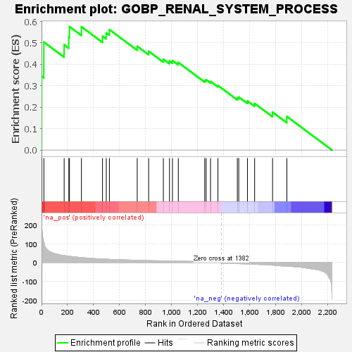
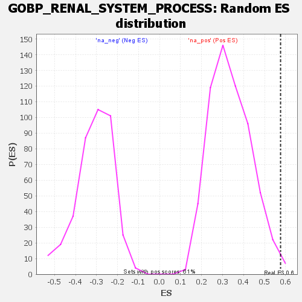

| Dataset | rank |
| Phenotype | NoPhenotypeAvailable |
| Upregulated in class | na_pos |
| GeneSet | GOBP_RENAL_SYSTEM_PROCESS |
| Enrichment Score (ES) | 0.5760341 |
| Normalized Enrichment Score (NES) | 1.7012773 |
| Nominal p-value | 0.011475409 |
| FDR q-value | 0.4768855 |
| FWER p-Value | 0.995 |

| SYMBOL | RANK IN GENE LIST | RANK METRIC SCORE | RUNNING ES | CORE ENRICHMENT | |
|---|---|---|---|---|---|
| 1 | EMP2 | 1 | 225.791 | 0.3440 | Yes |
| 2 | ADCY9 | 18 | 109.484 | 0.5037 | Yes |
| 3 | SLC25A23 | 174 | 37.930 | 0.4914 | Yes |
| 4 | MAGED2 | 210 | 33.725 | 0.5270 | Yes |
| 5 | RRM2B | 215 | 33.336 | 0.5760 | Yes |
| 6 | HYAL2 | 307 | 26.563 | 0.5754 | No |
| 7 | AQP3 | 469 | 19.064 | 0.5316 | No |
| 8 | KCNQ1 | 498 | 18.126 | 0.5465 | No |
| 9 | RHPN2 | 522 | 17.120 | 0.5622 | No |
| 10 | F2R | 736 | 12.186 | 0.4844 | No |
| 11 | ATP6V1B1 | 824 | 10.528 | 0.4611 | No |
| 12 | CYP4F12 | 937 | 8.843 | 0.4239 | No |
| 13 | GAS6 | 984 | 8.161 | 0.4155 | No |
| 14 | NPR1 | 1007 | 7.907 | 0.4176 | No |
| 15 | TMEM63C | 1052 | 7.230 | 0.4087 | No |
| 16 | SULF2 | 1255 | 5.067 | 0.3250 | No |
| 17 | ADCY5 | 1266 | 4.982 | 0.3280 | No |
| 18 | AMN | 1300 | 4.635 | 0.3202 | No |
| 19 | HSD11B2 | 1357 | 4.101 | 0.3011 | No |
| 20 | ADM5 | 1506 | -5.699 | 0.2428 | No |
| 21 | CORO2B | 1517 | -5.882 | 0.2472 | No |
| 22 | F2RL1 | 1584 | -7.360 | 0.2286 | No |
| 23 | SLC4A5 | 1639 | -8.728 | 0.2174 | No |
| 24 | HAS2 | 1777 | -13.935 | 0.1767 | No |
| 25 | ADCY7 | 1887 | -19.211 | 0.1566 | No |
